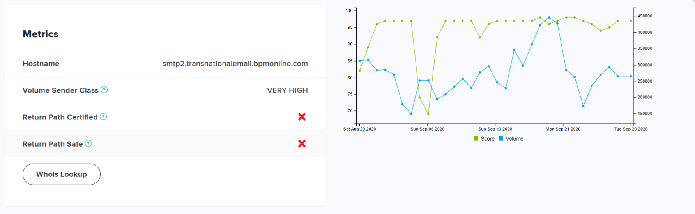

Перед отправкой рассылки вы можете проверить доставляемость писем и вероятность их попадания в спам при помощи специальных сервисов, описанных в этой статье. Такой подход позволит увеличить отношение доставленных писем к отправленным.
Сервисы для проверки контента писем
После того как вы вручную проверили содержимое письма, используйте специальные сервисы для редактирования текста. Они выявят ошибки и опечатки, а также помогут улучшить текст, находя в нем сложные предложения и конструкции, канцеляризмы, обобщения.
Сервисы для работы с русскоязычным текстом
- Главред — проверяет, насколько текст соответствует информационному стилю и легко читается. Сервис подсвечивает стоп-слова, например, канцеляризмы, необъективные оценки.
- Типограф — проверяет и стандартизирует типографику, позволяет автоматически исправить тип кавычек, тире и т. д.
- Орфограммка — проверяет текст на наличие орфографических и пунктуационных ошибок.
Сервисы для работы с англоязычным текстом
- Hemingway App — проверяет, насколько легко читается текст, и предоставляет рекомендации по его улучшению.
- Grammarly — проверяет грамматику, синтаксис, сложность восприятия текста. Сервис доступен как отдельное приложение и плагин для Google Chrome.
- Coschedule’s Headline Analyzer — оценивает заголовки с точки зрения интереса пользователя, то есть фактически проверяет вероятность открытия рассылки.
Сервисы для проверки репутации отправителя
Репутация отправителя рассылок — один из ключевых факторов, которые влияют на доставляемость рассылки. Регулярная проверка репутации позволит своевременно обнаружить ее ухудшение, принять меры и не допустить попадания писем в спам.
Для проверки различных аспектов репутации используются такие группы сервисов:
- валидаторы базы подписчиков,
- сервисы проверки IP-адресов,
- постмастеры,
- сервисы проверки черных списков.
Сервисы-валидаторы email-адресов
Контакты подписчиков в базе могут становиться неактуальными, например, при смене работы, в результате утери пароля или перехода на другой почтовый сервис. Наличие в базе неактуальных адресов негативно сказывается на репутации почтового домена. Рекомендуем регулярно проверять базу и удалять неактуальные адреса. В этом будут полезны следующие сервисы:
- Email address validation connector for Creatio — проверяет адреса электронной почты на их существование и подлинность.
- MailboxValidator — оценивает актуальность адресов электронной почты, присваивает баллы по результатам оценки и определяет статус адреса.
- QuickEmailVerification — оценивает актуальность адресов электронной почты, определяет процент валидных и невалидных адресов, количество адресов по категориям. Подходит для проверки базы без double opt-in или с большим количеством опечаток.
- MailValidator — оценивает актуальность адресов электронной почты посредством экспресс-проверки. Если по ее результатам обнаружены условно-валидные адреса, то для них можно провести полную проверку с определением типа сомнительного адреса.
- MillionVerifier — оценивает актуальность адресов электронной почты и по результатам оценки предоставляет отчет и диаграмму.
- ZeroBounce — оценивает актуальность адресов электронной почты и по результатам формирует максимально точный и подробный отчет с возможностью выгрузки отдельных полей.
Сервисы проверки репутации IP-адресов
Репутация IP-адреса непосредственно влияет на доставляемость писем. Для проверки репутации IP-адреса используйте следующие сервисы:
- SenderScore — оценивает репутацию IP-адресов и доменов в числах от 1 до 100. Чем выше оценка, тем лучше репутация IP. Показатели рассчитываются на основании средней активности отправителя за 30 дней и сравнении IP-адреса с адресами других отправителей. Высокая оценка означает, что у вас высокая репутация, и наоборот.
Пример графика SenderScore
- TallosInteligense — оценивает репутацию как хорошую, нейтральную или плохую.
- MXToolbox — предоставляет агрегированные отчеты с детализацией по состоянию домена или IP.
Сервисы проверки репутации домена (постмастеры)
Данные сервисы предоставляют статистику по отправленным рассылкам: количество доставленных писем, жалоб, отписок, прочитанных и удаленных сообщений. Крупные почтовые службы предоставляют собственные постмастеры:
Сервисы для проверки наличия в черных списках
Черный список (блеклист, спам-фильтр, DNSBL) — это список IP-адресов или домены, которые рассылают спам. Такие списки хранятся на серверах, к которым могут обращаться почтовые провайдеры. Рекомендуется в профилактических целях отслеживать наличие своего IP-адреса в блеклистах, чтобы избежать гарантированного попадания писем в спам.
Обычно домен или IP-адрес попадает в черный список временно (на 24–72 часа в зависимости от правил каждого из спам-фильтров). По истечении этого периода адрес автоматически разблокируется и отправку можно будет повторить. В большинстве случаев можно запросить досрочное исключение из черного списка. После рассмотрения заявки адрес могут разблокировать раньше.
К наиболее популярным черным спискам относят следующие:
- Spamhaus — проблемные адреса, которые принимают во внимание Mail.ru, Yandex, Google, Microsoft (Hotmail, AOL, MSN, Live), Yahoo. Для удаления из черного списка необходимо решить проблему, которая стала причиной санкций, и обратиться в техническую поддержку сервиса.
- Spamcop — сервис, предназначенный для жалоб на рассылку. При поступлении жалобы отправляется уведомление от провайдера с просьбой решить проблему.
- URIBL — проблемные домены, которые принимают во внимание многие почтовые сервисы. После неоднократного попадания в этот черный список удалиться из него практически невозможно.
- Proofpoint — проблемные адреса, которые принимает во внимание Apple. Если IP-адрес попадет в Proofpoint, то письма перестанут приходить на адреса @icloud.com и @me.com.
Используйте следующие инструменты для проверки попадания в черные списки:
- Dnsbl.info — проверяет наличие IP или домена по всем базам черных списков и определяет статус в них.
- MXToolbox — проверяет наличие домена в черных списках при помощи меню “Email Health”. Также позволяет проанализировать состояние DNS домена и проверить его на наличие ошибок.
Сервисы проверки писем перед отправкой
Вы можете проверить, в какие папки популярных почтовых сервисов попадет письмо, путем ручного тестирования или используя специальные сервисы.
- Glockapps — прогнозирует, в какую папку попадет письмо, а также предоставляет рекомендации, как исправить плохую доставляемость писем и что на нее влияет.
- Сервисы Litmus и Email on Acid проверяют, как будет отображаться контент письма в разных почтовых сервисах, браузерах или на разных устройствах.
- Mail-tester — универсальный сервис, который проверяет письмо перед отправкой по ряду параметров:
- наличие email-адреса отправителя в черном списке почтовых сервисов,
- настройка email-аутентификации,
- наличие ошибок или нерабочих ссылок.
Каждый параметр, по которому осуществлялась проверка, можно развернуть, чтобы получить более подробную информацию.